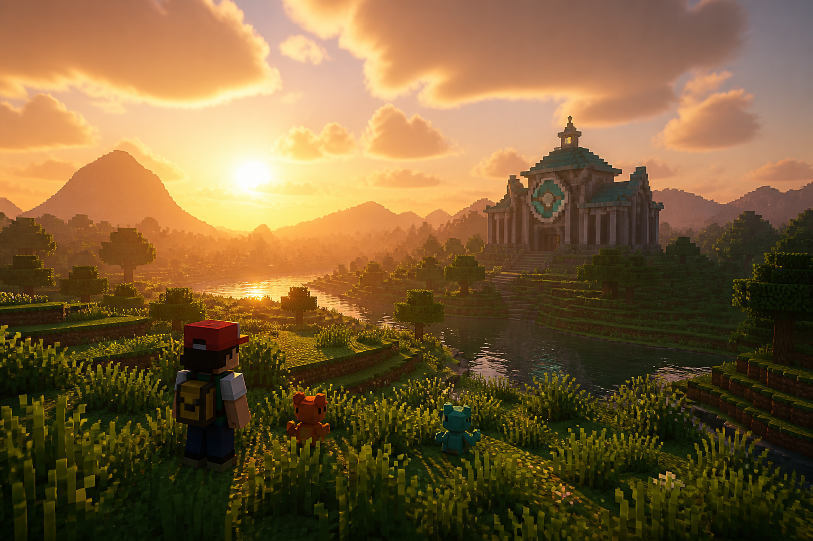
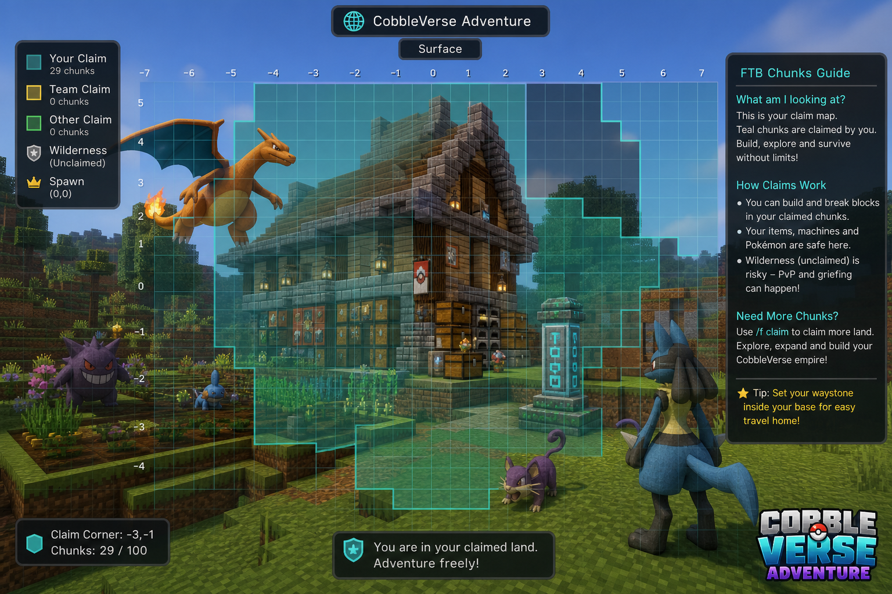

FAQ
Expanded answers for the problems every new PokeHaven trainer hits.
Contents
{kind=link}

PokeHaven EU. Install PokeHaven EU Client 1.7.42 (CobbleVerse + our UI). Copy the IP from Discord — it can rotate.What is the server called?
PokeHaven EU is the label you type in Multiplayer → Add Server. The coloured MOTD under it comes from the server.
Why did my Pokémon stop leveling?
Level cap — not a bug. Beat the next gym. Check your Trainer Card. See Level cap.
I can't join the server
Wrong pack version is the usual cause. Re-import PokeHaven EU Client 1.7.42 from Discord/Drive. See Getting started.
Textures look broken
Fully restart the client after import. If FancyMenu prompts about resources, follow it (sometimes hold T). Re-download the pack if files were interrupted.
My Empty Map became useless
You right-clicked it in the world. Craft a new Empty Map and combine it on the Kanto Cartography Table — Gym maps.
{kind=link}

Seagrass drops nothing
Use Shears. Hand-breaking seagrass yields zero in Java Edition.
Someone opened my chests
Claim with FTB Chunks immediately.
Where is Brock?
Craft Brock’s map with the starter Cartography Table + Brock Map Key + Empty Map. Walkthrough: Brock.
Where is Misty?
After Brock, craft her map: Cerulean Star (seagrass needs Shears) + fresh Empty Map on the Kanto Cartography Table. Guides: Misty · Gym maps.
Do I claim with Open Parties?
No. On PokeHaven EU use FTB Chunks only. Open Parties and Claims is in the pack — don’t use it for your base. See Claims.
Is there a browser map?
Yes — BlueMap: http://88.211.214.163:8100. More travel tools: Travel.
Can I donate?
Yes, optionally — donations help keep the server online / upgraded. There are no gameplay perks, ranks, or VIP rewards. Links live in Discord.
How do I craft Poké Balls?
Full screenshot guide: Poké Balls. More crafts: Essential recipes · Recipe browser.
Where are normal Minecraft tips?
Minecraft survival hub — mining, farming, Nether, villages, death, and what this pack changes.
Is there a quest arrow?
No single quest arrow. Use gym maps, the level cap, and the Advancements checklist (Achievements — often L). Post-league goals: Post-game and legendaries.
Can I loot villages?
Yes. Center/house chests are fair game. On PokeHaven EU, emptied loot may refresh later.
Voice chat key?
Esc → Options → Controls → Simple Voice Chat. Push-to-talk is nicest in groups. See Voice chat.
Where is the player wiki?
pokehaven.wiki — English + Nederlands (flags on the site). Also pinned in Discord #pokehaven-wiki. Start with Getting started, Claims, Gym maps, Brock.
Where do I ask for help?
PokeHaven EU Discord — send a screenshot + what you already tried. IP and pack links live in #how-to-join.
#help— quick public questions other players can answer too#tickets— private help, reports, appeals, longer staff issues
Can I turn off the level cap?
No — not on PokeHaven EU. Beat the next gym. See Level cap.
Why aren’t Pokémon biting my fishing rod?
Use a Cobblemon rod (Poke Rod / Lure Rod / …), not only a vanilla Minecraft rod. Guide: Fishing.
How do shiny odds work?
Wild base rate is 1 / 2048. Breeding can use Masuda / crystal methods. Full page: Shiny hunting · Breeding.
I beat Blue — do I restart the server?
No. On PokeHaven, follow the champion book: Trainer Association → Johto Trainer Card (your cap resets; others unaffected). If Johto structures are missing, ask in Discord — staff may need one restart. Checklist: Mega & late-game · Progression · Blue.
How do outfits / costumes work?
Craft trainer clothes with Cloth (wool + string), equip in armor slots. Pokémon looks use cosmetic slots / special items (Pika Case, Furfrou + dye + Shears, Lucario Costume Box). Full guide: Outfits and cosmetics.
Cosplay Pikachu cannot evolve into Raichu. Use a normal Pallet Pikachu if you want Raichu.
See also: Common mistakes · Wiki home · 30-day roadmap